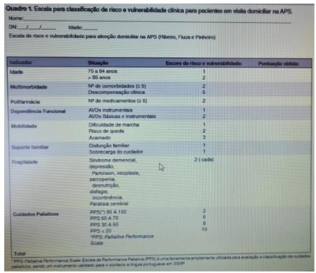
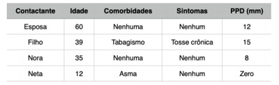
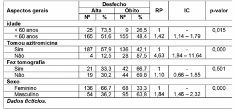
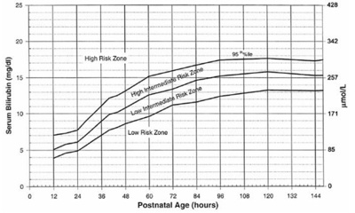
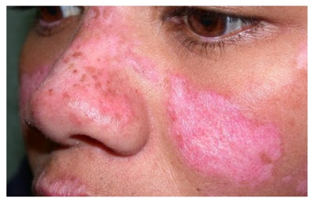
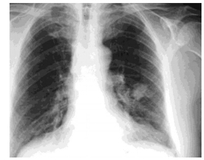
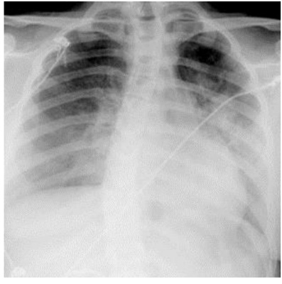
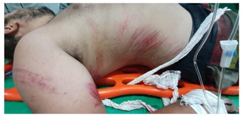

Questão 1 · Síndrome da bexiga dolorosa · 4000129579Mulher de 47 anos, procura atendimento com queixa de dor suprapúbica ao enchimento vesical há uns quatro meses, sem melhora. A dor às vezes piora na semana anterior à menstruação e alivia com a micção. Relata que vem urinando mais de 10 vezes ao dia. Nega perda de urina ou queixas vaginais. Ao exame físico, não apresenta anormalidades, exceto leve dor à palpação da parede vaginal anterior no toque vaginal. Após sumário de urina normal e urinocultura negativa, qual o exame complementar mais indicado a seguir?
A Cistoscopia.
B Biópsia de bexiga.
C Urografia excretora.
D Estudo urodinâmico.
Questão 2 · Tratamento não hormonal dos sintomas climatéricos · Terapia hormonal · 4000129578Mulher de 50 anos, procura unidade básica de saúde relatando calores noturnos intensos há cerca de 6 meses, sendo mais de 10 episódios durante a noite. Refere ainda insônia e irritabilidade associadas. Menopausa há 1 ano. Tem histórico de carcinoma ductal invasivo em mama direita há 2 anos, vindo em uso de tamoxifeno desde então. Nega outras medicações. Qual a conduta terapêutica medicamentosa mais indicada para esse caso?
A Clonidina.
B Paroxetina.
C Isoflavona.
D Venlafaxina.
Questão 3 · Medicina f etal · Avaliação da vitalidade f etal · Cardiotocograf ia CTB · 4000129577Gestante de 35 anos, G3P2vA0, idade gestacional de 38 semanas, comparece à maternidade referindo dores tipo contração e perda de líquido transvaginal. Teve diagnóstico de diabetes gestacional desde a terceira consulta de pré-natal e controlou com dieta. Ao exame: pressão arterial de 140x90mmHg, presença de contrações rítmicas, dilatação do colo uterino de 5cm, bolsa rota com líquido amniótico claro. Exame cardiotocográfico mostrou o seguinte traçado: Qual o tipo de desaceleração apresentada (DIP) e em qual categoria de cardiotocogra a intraparto esse traçado se enquadra?

A DIP 2; categoria 2.
B DIP 2; categoria 3.
C DIP 3; categoria 2.
D DIP 3; categoria 3.
Questão 4 · Trabalho de parto prematuro TPP · Intercorrências obstétricas obstetrícia patológica · Obstetrícia · 4000129576Paciente de 20 anos, G2P1, IG 30 semanas, parto vaginal prematuro prévio, procura emergência obstétrica com cólicas acentuadas. Ao exame físico: PA 100x60 mmhg, altura uterina 29 cm, batimentos fetais 150 bpm, dinâmica uterina presente, toque vaginal evidencia colo uterino de consistência amolecida, em apagamento, dilatado 3 centímetros, com bolsa amniótica íntegra. Baseado nesse quadro clínico, avalie os itens abaixo e indique a conduta inicial mais adequada ao caso.
A Realizar medida de colo uterino por meio de ultrassonografia transvaginal, para confirmar diagnóstico.
B Prescrever antibioticoprofilaxia contra infecção pelo estreptococo do crupo B e sulfato de magnésio para neutroproteção.
C Prescrever nifedipino 20 mg via oral a cada 30 minutos, no máximo 4 doses, e betametasona 12 mg intramuscular de 24/24 horas, 2 doses.
D Internar paciente em maternidade terciária, prescrever hidratação venosa vigorosa e analgesia e orientar repouso em decúbito lateral esquerdo.
Questão 5 · · 4000129575Conceitos f undamentais óbito materno óbito por causa materna causas obstétricas diretas e causas obstétricas indiretas A OMS conceitua morbidade materna grave como uma complicação que ocorra durante a gravidez, o parto ou nos 42 dias iniciais do puerpério, e que coloque em risco a vida da mulher (Pattinson et al., 2009). O estudo da mortalidade materna é um dos melhores indicadores da qualidade de saúde e atenção à mulher. Com relação à mortalidade materna, é correto afirmar:
A As principais causas obstétricas diretas das mortes maternas são: hemorragia, hipertensão e infecção.
B As principais causas obstétricas indiretas são: prematuridade, placenta prévia, diabetes gestacional, doença cardiovascular e obesidade.
C A taxa de mortalidade materna por causas obstétricas indiretas tem-se mantido estável, fato que pode ser atribuído às medidas adotadas na atenção humanizada ao parto.
D A taxa de mortalidade materna por causas obstétricas diretas vem diminuindo devido às medidas adotadas para a redução da transmissão vertical do HIV/AIDS e da sífilis congênita.
Questão 6 · Células glandulares atípicas AGC · 4000129574Mulher de 37 anos, G2PC2, com dois lhos vivos, vem à consulta na policlínica com resultado de citologia oncótica, há um mês, revelando: células glandulares atípicas. Realizou colposcopia e biópsia de colo, que mostrou adenocarcinoma in situ. Qual a melhor conduta a seguir?
A Nova citologia e exérese da zona de transformação.
B Conização e histeroscopia com biópsia.
C Histerectomia total com anexectomia.
D Histerectomia total simples.
Questão 7 · Rotura prematura de membranas ovulares RPM · Obstetrícia · 4000129573Paciente, 30 anos, G2P1nA0, idade gestacional de 28 semanas, tabagista, com polidrâmnio idiopático, procura assistência obstétrica referindo perda de líquido amniótico em grande quantidade por via vaginal. A conduta imediata será:
A Realizar ultrassonografia para confirmar a ruptura e a hipoplasia pulmonar.
B Oferecer suplementação com progesterona vaginal para reduzir o risco de parto prematuro.
C Indicar tocólise e administrar betametazona 12 mg a cada 24 h por 2 dias para maturação pulmonar do feto.
D Realizar exame especular e administrar ampicilina 2 g EV, 6/6 h por 48 h + azitromicina 1 g VO dose única, seguida de amoxicilina 500 mg VO 8/8 h por mais 5 dias.
Questão 8 · Hemorragias pós parto HPP e rotura uterina · Puerpério · Obstetrícia · 4000129572Paciente, 28 anos, G4P4v, encontra-se no período de Greenberg, parto com auxílio de vácuo extrator. Apresenta quadro de sangramento transvaginal aumentado, com coágulos. Ao exame, evidenciam-se PA: 90x40 mmHg, Pulso: 135 bpm, agitada, útero amolecido ao nível de anco direito. A partir do quadro clínico e exame físico apresentados, assinale a afirmação correta.
A A principal hipótese diagnóstica é de coagulopatia, necessitando plasma fresco congelado, plaquetas e concentrado de hemácias.
B O índice de choque é maior que 1,4 sendo necessário abordagem agressiva e imediata, devendo ser aberto protocolo de transfusão maciça.
C O sangramento ocorrido é descrito como hemorragia pós-parto tardia, sendo pouco frequente e representando mínimos riscos para as pacientes.
D A conduta ativa no secundamento é efetiva na prevenção da hemorragia pós-parto e consiste na administração de ocitocina (15 UI) EV 100ml/h em cada soro durante 24 h.
Questão 9 · Obstetrícia · Parto · Assistência ao parto normal · 4000129571Primigesta de 17 anos, IG 40 semanas, pré-natal sem intercorrências, comparece à emergência em trabalho de parto ativo, sendo admitida para assistência hospitalar. Encontra-se ansiosa e refere não ter sido orientada sobre o processo do nascimento durante o pré-natal. De acordo com as boas práticas na assistência ao parto, indique, dentre as opções abaixo, qual recomendação pode ser repassada à esta paciente no momento da admissão:
A evita-se a indicação de analgesia peridural em fases iniciais de trabalho de parto, mesmo sob a solicitação da mulher.
B as posições verticalizadas devem ser estimuladas durante todo o trabalho de parto, conforme o desejo e conforto da mulher, mas devem ser evitadas durante o período expulsivo.
C conforme recomendações mais recentes, lavagem intestinal, episiotomia e tricotomia genital e perineal devem ser realizados de rotina, desde que previamente comunicados e permitidos pela mulher.
D o exame de toque vaginal para avaliar a progressão da dilatação cervical, deverá ser realizado em intervalos mínimos de 2 a 4 horas, evitando-se praticá-lo com muita frequência, exceto se houver alguma preocupação com a evolução rápida do parto ou em resposta aos desejos da mulher.
Questão 10 · Prof ilaxia na Gestação · Inf ecção Urinária e Bacteriúria Assintomática na gestação ITU · 4000129570G.E.M., 30 anos, G2P1vA0, com dois episódios de bacteriúria assintomática no primeiro trimestre da gestação, comparece à Unidade de Pronto Atendimento (UPA) no segundo trimestre queixando-se de febre e dor lombar à direita. No exame físico, foi visto pressão arterial de 90x50 mmHg, pulso de 124 bpm e confusão mental. Qual a conduta adequada?
A Antibioticoterapia venosa após resultado de urinocultura para garantir adequado efeito da medicação.
B Quimioprofilaxia contra novo episódio de infecção urinária após adequado tratamento do quadro séptico atual.
C Cefalosporina de primeira geração oral no nível ambulatorial, após adequada hidratação venosa com 30ml/Kg de cristaloide.
D Quinolona oral no nível ambulatorial, após adequada hidratação venosa com 50ml/Kg de cristaloide na primeira hora.
Questão 11 · Morf ológico 1o trimestre USG 1o trim · Obstetrícia · 4000129569Paciente de 38 anos, primigesta, comparece ao ambulatório para primeira consulta de pré-natal com 10 semanas de idade gestacional, pela última menstruação. Você solicita a ultrassonogra a transvaginal para que seja realizada entre 11 semanas e 13 semanas e 6 dias. Qual é, dentre as seguintes opções, uma função dessa ultrassonografia?
A Diagnosticar aneuploidia.
B Rastrear colo curto na gestação.
C Confirmar a datação da gravidez.
D Diagnosticar doença hipertensiva gestacional.
Questão 12 · O trabalho de parto e o parto · Obstetrícia · Assistência ao parto normal · 4000129568Primigesta a termo, comparece à emergência da maternidade referindo cólicas e perda de catarro com sangue. Ao exame obstétrico, apresentava 2 contrações uterinas em 10 minutos, feto com cabeça ocupando a escavação pélvica, xa a mobilização, foco de ausculta principal em quadrante inferior direito a 155 batimentos cardiofetais, colo uterino 50% apagado, em centralização, consistência intermediária, 3 cm de dilatação, apresentação no plano -2 de lee. Sobre este caso, é correto afirmar que:
A o feto se encontra em situação longitudinal e posição a direita.
B a paciente se encontra em trabalho de parto ativo e o partograma deverá ser aberto.
C a apresentação está insinuada, o que infere em bom prognóstico para o parto vaginal.
D a variedade de posição fetal será determinada quando houver dilatação cervical mais avançada.
Questão 13 · Diagnóstico · Controle glicêmico · 4000129567Paciente A.B.C., 40 anos, obesa, no curso da 25ª semana de gestação, comparece à consulta pré-natal com queixas de edema em membros inferiores, poliúria e ganho ponderal de 3 Kg nos últimos 30 dias. Traz exame de TTOG com 75g de glicose (curva glicêmica) com resultados: 90, 170 e 168 mg/dl (Jejum, 1h e 2h). Após avaliar o quadro clínico e exames laboratoriais acima, assinale o diagnóstico correto e as metas glicêmicas esperadas.
A Diabetes Mellitus tipo 1. Níveis glicêmicos de jejum ≤ 99 mg/d ℓ, o de 1º h ≤ 140 mg/d ℓ, e o de 2º h ≤ 120 mg/d ℓ.
B Diabetes Mellitus tipo 2. Níveis glicêmicos de jejum ≤ 92 mg/d ℓ, o de 1º h ≤ 180 mg/d ℓ, e o de 2º h ≤ 153 mg/d ℓ.
C Diabetes Mellitus Gestacional. Níveis glicêmicos de jejum ≤ 95 mg/d ℓ, o de 1º h ≤ 140 mg/d ℓ, e o de 2º h ≤ 120 mg/d ℓ.
D Diabetes Mellitus Pré-gestacional. Níveis glicêmicos de jejum ≤ 92 mg/d ℓ, o de 1º h ≤ 126 mg/d ℓ, e o de 2º h ≤ 110 mg/d ℓ.
Questão 14 · BIRADS · 4000129566Mulher de 30 anos, nuligesta, apresenta nódulo de mama direita, palpável, indolor e que persiste após 1 ciclo menstrual. Relata que uma tia teve câncer de mama aos 60 anos. O ultrassom de mamas evidenciou nódulo sólido de 1,8 cm - BI- RADS-3. Qual seria a melhor conduta, de acordo com as diretrizes de conduta para diagnóstico e terapêutica?
A Em mulheres com nódulos palpáveis BI-RADS-3 deve ser indicada exérese da lesão, independentemente dos sintomas.
B As lesões BI-RADS 3 podem ter seguimento semestral por até três anos, não sendo indicada a biópsia para esta conduta.
C A exérese cirúrgica de lesões mamárias BI-RADS-3 deve ser priorizada aos casos assintomáticos e com história familiar, pois apresentam maior risco para câncer de mama.
D Até a terceira década de vida, a maioria dos nódulos sólidos da mama não necessita de investigação; no entanto, quando o nódulo é palpável, recomenda-se mamografia de rastreamento.
Questão 15 · Prolapsos de órgãos pélvicos · 4000129565Mulher, 55 anos, casada, com queixa de bola na vagina. Ao exame, apresenta POP-Q: Aa +3, Ba +4, C 0, HG 4, CP 3, CVT 8, Ap +2, Bp +2, D -1. Teste de estresse negativo. Qual a melhor conduta?
A Cirurgia de Le Fort.
B Cirurgia de Manchester.
C Histerectomia vaginal total, colpoplastia anterior e colpoplastia posterior.
D Histeropexia sacroespinhal, colpoplastia anterior e colpoplastia posterior.
Questão 16 · Diagnóstico · 4000129564Mulher de 25 anos, assintomática, apresenta-se ao ambulatório de ginecologia preocupada, pois realizou um ultrassonogra a transvaginal que foi compatível com os seguintes achados: massa anexial ovariana direita de maior diâmetro de 4 cm, contornos regulares, com conteúdo heterogêneo com reforço acústico posterior, sem septações, ou áreas sólidas. À dopplervelociometria, apresentava fluxo periférico de alta resistência. Qual a melhor conduta para ela?
A Uso de anticoncepcional combinado oral para redução da massa devido ao aspecto funcional.
B Acompanhamento ultrassonográfico após seis meses devido ao aspecto benigno.
C Ooforectomia laparoscópica com congelação devido ao risco de malignidade.
D Ooforoplastia laparoscópica devido ao risco de torção ou ruptura.
Questão 17 · Síndrome dos ovários policísticos · 4000129563Mariana, 31 anos, casada, com antecedentes de ciclos menstruais longos e acne, vem ao ambulatório de ginecologia referindo desejo de gestar há 18 meses, período em que vem mantendo, regularmente, relações sexuais desprotegidas. Nega patologias prévias. Traz TSH, prolactina e testosterona total normais. Ao ultrassom transvaginal, apresenta útero de 55 cm3 de volume, endométrio de 8mm, ovário esquerdo com volume de 15 cm³ e ovário direito de 17 cm³ , com 15 microcistos em sua periferia. Tem histerossalpingogra a e espermograma do parceiro recente sem alterações. Qual o tratamento mais indicado para Mariana?
A Gonadotrofina.
B Análogo do GnRH.
C Citrato de Clomifeno.
D Ressecção cuneiforme dos ovários.
Questão 18 · Condiloma · 4000129562Mulher de 20 anos comparece à primeira consulta ginecológica com queixa de prurido vulvar ocasional há alguns dias. Relata corrimento vaginal de longa data, sem relação com fase do ciclo menstrual. Faz uso de contraceptivo injetável mensal desde a sexarca aos 17 anos. Ao exame, apresenta vulva sem hiperemia, com presença de pequenas lesões papilomatosas espiculadas, de coloração semelhante à pele, em região perineal. Conteúdo vaginal esbranquiçado, escasso, sem odor, não aderido às paredes vaginais. Colo sem lesões. Qual a conduta adequada a seguir?
A Coletar exame citopatológico.
B Solicitar genotipagem para HPV.
C Aplicar ácido tricloroacético a 90%.
D Realizar bacterioscopia a fresco do conteúdo vaginal.
Questão 19 · Doença Inf lamatória Pélvica · 4000129561Juliana, 15 anos, G1P0A1, vem para revisão de DIU na UBS, inserido há 1 mês após abortamento provocado, referindo dor pélvica. Ao exame, apresenta abdome ácido, doloroso à palpação profunda em hipogástrio e fossas ilíacas bilateralmente. Nega dor à descompressão súbita do abdome. Evidencia-se corrimento purulento exteriorizando-se pelo OCE ao espéculo e dor a mobilização do colo e palpação de anexos no toque bimanual. Qual a melhor conduta?
A Internar paciente, iniciar ceftriaxona e clindamicina e reavaliar após 48 horas.
B Iniciar tratamento ambulatorial com doxiciclina e metronidazol e reavaliar com 24 horas.
C Retirar o DIU de imediato e colher cultura de secreção endocervical para iniciar tratamento.
D Tratar com dose única de azitromicina e ciprofloxacino e retirar DIU depois de 6 horas do tratamento.
Questão 20 · Tratamento do sangramento uterino anormal agudo · 4000129560Mulher de 44 anos, G1P1A0, com história prévia de trombose venosa profunda na gestação, procura atendimento médico com quadro de sangramento vaginal intenso, com presença de coágulos, há 4 dias, após atraso menstrual de cerca de 2 meses. Apresenta-se hipocorada e sudoreica, com pressão arterial de 80x60mmHg e pulso de 110ppm, após hidratação venosa. Ao exame especular, visualiza-se grande quantidade de sangue uindo por orifício cervical externo, colo e vagina sem lesões. Ao toque vaginal, útero de consistência, contorno e volume normais, colo móvel e impérvio. Teste imunológico de gravidez negativo. Qual a conduta adequada para o caso?
A Realizar curetagem uterina.
B Aguardar resultado de ultrassonografia transvaginal.
C Inserir sistema intrauterino liberador de levonorgestrel.
D Administrar acetato de medroxiprogesterona 150mg intramuscular.
Questão 21 · Saúde do Idoso geriatria · Medicina Preventiva · 4000129559Um médico de família e comunidade realiza visita domiciliar a uma paciente de 86 anos que vive com a lha e a bisneta. A bisneta estuda em horário integral e faz cursinho pré-vestibular a noite, a lha cuida das tarefas domésticas e dedica-se “24 horas” aos cuidados da ma de consciência alterna lucidez com períodos de confusão. É acompanhada devido doença de Parkinson, síndrome demencial, catarata, diabetes melitus. Necessita de ajuda para alimentar-se e para higiene. A dieta é pastosa (dificuldade para ingerir sólidos), recebe cinco refeições ao dia e o apetite é preservado. Não possui controle de esfíncteres, necessitando uso de fraldas. Em uso de levodopa\ benserazida, glicazida, carbonato de cálcio, alendronato, risperidona. Utilizando a escala de risco e vulnerabilidade para atenção domiciliar, qual a classificação da paciente e o planejamento para a periodicidade de visitas domiciliares?

A Médio risco e as visitas devem ser semestrais.
B Muito alto risco e as visitas devem ser mensais.
C Alto risco e as visitas devem ser a cada 2 a 3 meses.
D Não é possível classificar o risco, pois são necessários exames complementares.
Questão 22 · Método Clínico Centrado na Pessoa · 4000129558Paciente masculino, 82 anos, compareceu à unidade de atenção primária para consulta com sua médica de família, a última consulta foi há 1 ano, quando compareceu acompanhado de seu lho. Hoje comparece desacompanhado para o atendimento e apresenta pressão arterial de 160 x 100 mmHg e glicemia capilar pósprandial de 200 mg/dL. No prontuário, havia uma lista de medicamentos com hidroclorotiazida, losartana, anlodipino, metformina e insulina NPH. Ao ser questionado, refere que usava as medicações sem ajuda de familiares, mas não sabia os nomes dos medicamentos e não tinha segurança para explicar a posologia. Referiu que não retornou na data programada pois estava assintomático. Estava muito triste com a perda do lho de 33 anos de idade, que foi assassinado há 3 meses em disputa de facções do bairro. Após discussão sobre a situação, a equipe de saúde da família realizou uma conferência familiar no domicílio com elaboração do genograma e ecomapa. Qual componente do método clínico centrado na pessoa foi abordado na visita domiciliar?
A Entendendo a pessoa como um todo.
B Intensificando a Relação entre a pessoa e o médico.
C Explorando a saúde, a doença e a experiência da doença.
D Elaborando um plano conjunto de manejo dos problemas
Questão 23 · Comunicação de Acidente de Trabalho CAT · 4000129557Adulto, 40 anos, lixeiro, empregado celetista de uma empresa de limpeza pública, chega ao posto de saúde demandando uma consulta de Acolhimento com a mão direita envolta em uma blusa. Relata que sofreu ferimento na mão ao manusear um objeto pontiagudo e cortante mesmo usando luva durante seu turno de trabalho. Nega ter sofrido qualquer tipo de acidente anteriormente. Ao exame da mão direita: presença de lesão incisa, suja, de bordos definidos, com cerca de 4,0 (quatro) centímetros, sem sinais ogísticos e sangrando discretamente; movimentos dos dedos preservados. Considerando o caso clínico descrito acima, qual o tipo de acidente de trabalho sofrido pelo paciente e qual o tipo de Comunicação de Acidente de Trabalho (CAT) deve ser emitida, respectivamente?
A Acidente de Trajeto e CAT de Reabertura.
B Acidente Típico e CAT de Reabertura.
C Acidente de Trajeto e CAT Inicial.
D Acidente Típico e CAT Inicial.
Questão 24 · Quadro clínico diagnóstico e sinais de alarme · Tratamento · 4000129556Paciente masculino, 55 anos, comparece à demanda espontânea com queixa de dor lombar iniciada há 1 semana durante a qual manteve repouso relativo pois já tinha passado por crises semelhantes mas que resolviam apenas com repouso e uso de relaxantes musculares. No entanto, dessa vez, resolveu buscar atendimento pois além da persistência da dor tem sentido dormência na perna direita. Nega alterações urinárias ou intestinais ou dormência perineal. Ao exame, apresenta Lasegue + a direita e diminuição da força de dorsiflexão do pé direito. Qual a conduta indicada nesse caso?
A Fisioterapia e retorno em 3 meses.
B Encaminhar para serviço de emergência.
C Antiinflamatório oral e retorno em 1 semana.
D Corticoide de depósito e retorno em 1 mês.
Questão 25 · Violência · 4000129555Adolescente de 13 anos compareceu à consulta no ambulatório do adolescente acompanhada da irmã de 16 anos. A queixa principal foi “receber remédios para vermes”. Durante a consulta o médico observou que Joana é tratada por “porcaria” pela irma Ao examinar Joana, observou cortes super ciais em antebraços, poupando os punhos. Joana relatou que constantemente corta os braços com a faca para "diminuir a angústia". Considerando o caso acima e a atenção à saúde da criança e do adolescente em situação de violência, assinale a alternativa com a hipótese diagnóstica provável e conduta mais adequada.
A Trata-se de violência física e o caso deve ser notificado ao conselho tutelar.
B Trata-se de violência psicológica e a adolescente deve ser acompanhada por equipe multiprofissional e interdisciplinar.
C Trata-se de síndrome de Münchausen por procuração e deve analisar a saúde mental materna com referência ao CAPs ou matriciamento com psiquiatra.
D Trata-se de automutilação e configura violência física contra a adolescente e deve-se notificar o caso ao conselho tutelar e realizar o acompanhamento multiprofissional.
Questão 26 · Avaliação dos contatos · 4000129554Homem de 62 anos recebe diagnóstico de tuberculose pulmonar bacilífera na Unidade Básica de Saúde. Seus contactantes são convocados à consulta médica, cujos dados constam na tabela a seguir: Qual dos contactantes tem indicação, neste momento, de terapia para infecção latente com rifampicina?

A Neta.
B Nora.
C Filho.
D Esposa.
Questão 27 · Medicina Preventiva · Alimentação Inf antil · 4000129553Lactente, de 4 meses, comparece à Unidade de Saúde acompanhado de sua mãe de 18 anos. É atendido pela primeira vez pelo médico de família após isolamento social necessário à família durante a pandemia pelo COVID19. Segundo a mãe, o aleitamento materno ocorreu até 45 dias de vida, tendo sido substituído por fórmula infantil de partida, por queixa de "leite fraco". Quando questionada sobre a possibilidade de retornar o aleitamento materno, a mãe informa que não está mais produzindo leite. A família é composta pela mãe, o lactente de 4 meses e outro lho de 2 anos. A renda familiar atual é de 600 reais. Em relação às recomendações alimentares para o bebê, considerando recomendações cientí cas e o contexto social, econômico e cultural, assinale a melhor conduta.
A Manter a fórmula de partida utilizando maior diluição.
B Substituir a fórmula de partida por leite de vaca in natura.
C Manter a fórmula de partida e introduzir papa salgada e papa de frutas.
D Substituir a fórmula de partida para a fórmula de seguimento, visto esta ter menor custo.
Revisar: possível letra faltando em enunciado
Questão 28 · As grandes síndromes geriátricas gigantes geriátricos · 4000129552Paciente, 75 anos, analfabeta, portadora de osteoartrose, hipertensão arterial sistêmica e diabetes mellitus não-insulino dependente. Comparece ao posto de saúde para consulta de rotina acompanhada de sua lha. Apresenta a seguinte avaliação multidimensional: VISÃO – Aplicação do cartão de Jaeger: olho direito 20/70 e olho esquerdo 20/70. AUDIÇÃO – Aplicação do teste do sussurro (whisper): paciente responde corretamente à pergunta formulada próxima ao ouvido direito e próxima ao ouvido esquerdo. FUNÇÃO DOS MEMBROS SUPERIORES PROXIMAL – Paciente consegue tocar a nuca com ambas as mãos. DISTAL – Paciente consegue apanhar um lápis sobre a mesa com cada uma das mãos e colocá- lo de volta no mesmo lugar. FUNÇÃO DOS MEMBROS INFERIORES – Paciente consegue levantar da cadeira sozinho na segunda tentativa, mas utiliza os braços como apoio. Consegue caminhar 3,5 metros, voltar e sentar. ESTADO MENTAL – Escore do mini exame do estado mental (MEEM) de 15 pontos. HUMOR – Escala de depressão geriátrica abreviada (GDS) = 12 pontos. DOMICÍLIO – Paciente nega queda nos últimos 12 meses. Em sua casa, não há escadas/batentes, tapetes soltos nem corrimão no banheiro. ATIVIDADES DIÁRIAS – Paciente, sem auxílio, é capaz de sair da cama e preparar suas refeições. Porém, não consegue fazer compras. INCONTINÊNCIA – Nega perda involuntária de urina. NUTRIÇÃO – Nega perda de peso no último ano. Peso usual de 82 Kg. Altura usual de 1,60 cm. SUPORTE SOCIAL – Conta com apoio de sua lha mais nova para ajudá-la e caso que incapaz de tomar decisões. Baseado na avaliação multidimensional da idosa acima descrita, qual a conduta mais adequada?
A Solicitar audiometria.
B Iniciar um antidepressivo.
C Prescrever um andador ou bengala.
D Reavaliar acuidade visual a cada 3 meses.
Questão 29 · Medicina Preventiva · Ferramentas de abordagem f amiliar · 4000129551Durante uma visita domiciliar de um paciente acamado, você percebe um certo "clima pesado" entre os integrantes da família. É perceptível que a cuidadora está mais áspera nas suas respostas, a nal de contas já são 3 anos cuidando, praticamente só do paciente. Qual ferramenta de abordagem familiar ajudará, de maneira mais especí ca, a equipe de saúde da família em traçar estratégias para este caso?
A Ecomapa.
B Genograma.
C PRACTICE.
D Apgar familiar.
Revisar: possível letra faltando em enunciado
Questão 30 · Insulinoterapia no tratamento do diabetes mellitus tipo 2 · 4000129550Paciente, sexo masculino, 53 anos, hipertenso e diabético há 10 anos, comparece em consulta de rotina para mostrar exames. Queixar-se de perda de peso. Ao exame apresenta BEG, corado, hidratado, eupneico, PA=120x80, 70 kg, AP siológica, AC RCR 3T B4, Extremidades: ppp, edema de mmii+/4+ sem cacifo. Exames complementares: GJ = 180mg/dl; HbA1c=8%, creatinina=1,8, TFG=42ml/min Medicação em uso: gliclazida MR 120 mg/d, metformina 2,5 g/d, enalapril 40 mg/d, furosemida 40 mg/d. Qual a conduta correta em relação ao tratamento farmacológico da diabetes?
A Iniciar insulina “bed time” e reduzir metformina.
B Associar terceiro antidiabético oral e reduzir a gliclazida.
C Iniciar insulina “bed time”, mantendo as outras medicações.
D Associar terceiro antidiabético oral, mantendo as outras medicações.
Questão 31 · Doenças inf ecciosas na gestação HIV síf ilis hepatites herpes · Sif ilis na gestação · Obstetrícia · 4000129549A enfermeira da sua equipe de saúde da família o(a) chama pois está atendendo uma gestante de 12 semanas, e o teste rápido para sí lis foi reagente. Ao avaliar alguns exames trazidos pela paciente, você identi ca uma sorologia para toxoplasmose IgM e IgG positivos. Diante dessa situação, qual conduta deve ser adotada?
A Iniciar tratamento para sífilis e para toxoplasmose.
B Solicitar VDRL e solicitar teste de avidez para IgG.
C Solicitar VDRL e iniciar tratamento para toxoplasmose.
D Iniciar tratamento para sífilis e solicitar teste de avidez para IgG.
Revisar: possível letra faltando em enunciado
Questão 32 · Medicina Preventiva · Estudos de Prevalência · Estudos SeccionaisTransversais · 4000129548Uma médica iniciou, em fevereiro de 2020, sua atuação como plantonista de um hospital que era referência para o tratamento de pacientes com COVID-19. Após atender os primeiros pacientes, resolveu ler um artigo para ter mais segurança no manejo clínico destes. Considerando os princípios da Medicina Baseada em Evidências (MBE) e os dados de um estudo transversal apresentados na tabela, qual a interpretação mais adequada para este artigo?

A A não realização de tomografia foi mais associada à evolução para óbito e a associação apresentou significância estatística.
B Ter idade menor que 60 anos foi associado a maior chance de evoluir para o óbito por COVID-19, mas não teve significância estatística.
C Pacientes do sexo masculino morreram mais que do sexo feminino e esse achado teve significância estatística.
D O uso de azitromicina foi mais prevalente entre os pacientes que evoluíram para óbito e um estudo transversal é o mais adequado para respaldar a tomada de decisão para uma conduta clínica.
Questão 33 · Cuidados paliativos em pneumologia · 4000129547Paciente do sexo masculino, 86 anos, é portador de câncer de pulmão com metástase para osso e fígado. Está totalmente acamado, dependente para as atividades de vida diária (AVD) e sonolento. Ingestão de alimentos reduzida. Familiares informam que paciente vinha apresentando falta de ar que piorou nas últimas 12 horas. Ao exame: Pressão arterial = 80 x 60 mmHg Frequência cardíaca = 112 batimentos por minuto Frequência respiratória = 30 incursões respiratórias por minuto Saturação periférica de oxigênio= 93% em ar ambiente Estado geral ruim, consumido, anictérico, acianótico, afebril, fala entrecortada a cada 15 segundos. Tórax: presença de retrações subcostais e esternocleidomastoideas discretas Ausculta pulmonar: Murmúrio vesicular universal com roncos de transmissão. Qual a melhor opção para o tratamento da dispneia do paciente descrito no caso clínico acima?
A Iniciar haloperidol 1-2 mg, SC.
B Prescrever morfina 1-5 mg, SC.
C Preservar paciente em ambiente fechado.
D Manter paciente deitado sem cabeceira elevada.
Questão 34 · Valor Preditivo Positivo · 4000129546Considere um cenário hipotético em que prevalência de lesões neoplásicas em pacientes com a Pesquisa de Sangue Oculto (PSO) positivo é de 1%, e que o PSO tem sensibilidade (S) de 85%, especi cidade (E) de 75%, Valor Preditivo Positivo (VPP) de 3,3% e o Valor Preditivo Negativo (VPN) de 99,8%. Se o PSO for positivo, qual a chance de o paciente ter a doença?
A 3,3%
B 75%
C 85%
D 99,8%
Questão 35 · Pediatria · Sarampo · 4000129545Lactante de 9 meses de idade, desnutrido, é levado para consulta na UBS devido quadro de febre (39ºC), tosse, conjuntivite e coriza nasal iniciados há 2 dias. No 3º dia houve piora da febre e aparecimento de rash cutâneo eritematoso morbiliforme com acometimento inicial da face, e posteriormente, pescoço e tronco. Qual o diagnóstico e qual conduta a ser adotada?
A Varicela e Aciclovir.
B Rubéola e Sintomáticos.
C Sarampo e Vitamina A.
D Exantema súbito e Sintomáticos.
Questão 36 · Prevenção Secundária · 4000129544Uma médica, atuando em uma equipe de atenção primária, recebe em seu consultório uma senhora de 74 anos de idade, solicitando um "check-up". Nega qualquer sintoma no momento. Não relata nenhum antecedente patológico pessoal ou familiar. Qual deverá ser a conduta da médica em relação ao rastreamento?
A Solicitar mamografia.
B Realizar exame de papanicolau.
C Solicitar sangue oculto nas fezes.
D Realizar o rastreamento para câncer de pele.
Questão 37 · Política Nacional de Atenção Básica PNAB · 4000129543Durante reunião de equipe semanal, o médico da equipe verde, da Unidade de Saúde da zona rural do município de Flores, é questionado acerca da organização de agenda que vem adotando. Assim, informa que realiza 16 atendimentos previamente agendados, por turno, de pessoas portadoras de doenças crônicas, crianças, idosos e gestantes. Caso alguma pessoa agendada falte à consulta, a vaga pode ser preenchida com um atendimento não agendado que chegue à unidade de saúde naquele dia. A enfermeira da equipe expressa preocupação com essa estratégia de organização, tendo em vista a dificuldade relatada pelos pacientes no acesso às consultas médicas, principalmente em situações não programadas. A partir do caso acima descrito, como deve proceder a equipe no que diz respeito à organização da agenda?
A Implementar agendamento com horário marcado.
B Reservar um turno na semana para demanda espontânea.
C Realizar abertura da agenda do médico para os próximos 3 meses.
D Reservar um percentual de consultas para demandas do dia em todos os turnos.
Questão 38 · Princípios e Diretrizes do Sistema Único de Saúde SUS · 4000129542Na reunião semanal de uma equipe da Estratégia de Saúde da Família, uma ACS se queixa que vem sendo realizado atendimento preferencial a população residente em uma das microáreas e solicita uma readequação do serviço, de modo que os atendimentos sejam prestados igualmente a todas as microáreas. Como forma de melhor compreender a situação, a médica da equipe sugere que os ACS forneçam alguns dados de cada microárea, os quais foram apresentados na reunião de equipe na semana seguinte. As informações fornecidas pelos ACS foram apresentadas no quadro abaixo: Considerando que o planejamento das ações em saúde requer informações atualizadas sobre os determinantes e as condições de saúde de uma comunidade, escolha a alternativa que evidencia o plano de ação que deve ser adotado pela equipe com o objetivo de fornecer um atendimento que atenda as necessidades de saúde da população:
A Direcionar o atendimento das crianças de zero a dois anos para o Pediatra.
B Priorizar o atendimento à microárea 4 em respeito ao princípio da equidade.
C Realizar visitas domiciliares mensais na microárea 2 e trimestrais nas demais microáreas.
D Organizar a agenda de modo a fornecer turnos de atendimentos para os grupos populacionais.
Questão 39 · Política Nacional de Atenção Básica PNAB · 4000129541Mulher, 65 anos, acompanhada por hipertensão, diabetes, obesidade comparece à unidade de atenção primária à saúde com queixa de febre baixa, dor de garganta, tosse, cefaleia e astenia há 7 dias. Na oximetria de pulso apresentou saturação de oxigênio de 89% em ar ambiente. O SAMU foi acionado e a paciente foi transferida na UPA e em seguida para hospital, onde cou em leito de terapia intensiva por 5 dias. A sua equipe de saúde da família (ESF) manteve contato com os pro ssionais da UPA e do hospital e realizou acompanhamento remoto por telefone e mensagens de aplicativo até a alta hospitalar, quando agendou visita domiciliar. Qual princípio da atenção primária à saúde está representado pela ação de sua ESF?
A Coordenação do cuidado.
B Longitudinalidade.
C Integralidade.
D Equidade.
Questão 40 · Prevenção Quaternária · 4000129540Homem, 43 anos, comparece à consulta agendada com seu médico de família para apresentar exames solicitados na última consulta. É acompanhado por hipertensão arterial sistêmica há 5 anos, em uso de losartana 50mg por dia, está assintomático. Não apresenta outras comorbidades. Não apresenta dados positivos na história patológica pregressa. Está sedentário. Nega tabagismo. Exames realizados há 1 mês: colesterol total 240 mg/dL, HDL 30 mg/dL, triglicerídeos 200 mg/dL, creatinina 1,0 mg/dL, glicemia 89 mg/dL. Estatura 1,75 m, peso 85 Kg, circunferência abdominal 95 cm, PA 125X80 mmHg, restante do exame físico sem alterações. O paciente questionou sobre o uso de medicamento para o colesterol, sua esposa usa rosuvatatina e perguntou se poderia iniciar. Após uma conversa sobre sua situação de saúde, cou pactuado um plano terapêutico com início de atividade física 5 vezes por semana, reduça e trans na alimentação, redução do peso corporal e não iniciar o uso de estatina até a próxima reavaliação em 4 meses. Em relação ao último item do plano terapêutico, que nível de prevenção está sendo aplicado?
A Primária.
B Secundária.
C Terciária.
D Quaternária.
Questão 41 · Psiquiatria Inf antil · Desenvolvimento psicossocial do adolescente · 4000129539Um adolescente de 14 anos é trazido à consulta e seus pais queixam-se de que ele mudou completamente o modo de relacionar-se em casa. Não aceita mais os padrões vigentes na família, não mantém mais suas coisas arrumadas e passa muitas horas ouvindo música com o som excessivamente alto. Na escola, o padrão de comportamento de Pedro é normal, não havendo qualquer queixa dos professores. É um aluno bastante responsável com suas obrigações escolares. Ao orientar a família, qual a explicação que o médico deve fornecer à família sobre o comportamento do filho?
A Está apresentando a Síndrome da Personalidade Dupla.
B Está vivenciando um evidente conflito e deve ser encaminhado à psicoterapia.
C Está apresentando características normais, assumindo identidades circunstanciais.
D Está vivenciando um intenso conflito e a melhor abordagem é a farmacológica.
Questão 42 · Risco de Recorrência e de Epilepsia · 4000129538Uma criança de 36 meses de idade chega no Ambulatório com seus familiares uma semana após ter tido uma crise convulsiva febril. Qual das alternativas contém uma situação de risco para recorrência das convulsões?
A O fato de a convulsão ter ocorrido com temperatura acima de 39 graus.
B O fato de a convulsão ter ocorrido nas primeiras 12 horas do surgimento da febre.
C O fato de a convulsão ter sido desencadeada após vacinação da criança de rotina.
D O fato de a convulsão ter sido classificada como generalizada e com duração inferior a 15 minutos.
Questão 43 · Linf adenites Cervicais · 4000129537Criança de 8 anos de idade há 20 dias apresenta adenopatia supraclavicular esquerda acompanhada de febre diária. Ao exame físico, observam-se linfonodos endurecidos, pouco dolorosos, coalescidos e aderidos a planos profundos, o maior cerca de 4 cm de diâmetro, sem sinais ogísticos. Nega uso de antibioticoterapia. Pai em tratamento para tuberculose. Quais os achados que definem que o pediatra indique uma biópsia ganglionar dessa criança?
A Localização e a consistência do gânglio.
B Tempo de evolução e o tamanho do gânglio.
C Contactante de tuberculose e febre persistente.
D Idade do paciente e ausência de sinais flogísticos.
Questão 44 · Síndrome do Lactente Sibilante Bebê chiador · Pediatria · 4000129536A mãe de uma criança de cinco anos de idade relata que o lho apresentou crises de sibilância durante os três primeiros anos de vida e não mais após essa idade; relata também que as crises eram desencadeadas principalmente por vírus e que foi melhorando com o crescimento. Nunca foi hospitalizado e não havia sintomas de eczema nem de rinossinusite. Assinale a alternativa que contém a hipótese diagnóstica mais provável para o que essa criança apresentou?
A Sibilância transitória da infância.
B Displasia broncopulmonar.
C Bronquioliopatia pós-viral.
D Asma atópica.
Questão 45 · COVID 19 · 4000129535Menino de 5 anos é trazido à Unidade Básica de Saúde por apresentar febre de 38°C, tosse e dor de garganta. A família relata contato com familiar acometido pelo Coronavírus há 1 semana. O médico da Equipe de Saúde da Família realiza o atendimento com ênfase em detecção precoce de sinais e sintomas que indiquem gravidade. Das opções abaixo, segundo o Ministério da Saúde, qual a que contém todos os sintomas indicativos de gravidade?
A Febre, dor abdominal e saturação de O₂ < que 95%.
B Irritabilidade, diarreia e ausculta pulmonar com crepitações.
C Desconforto respiratório, saturação de O₂ < que 95% e dor abdominal.
D Dispneia, saturação de O₂ < que 95% e piora clínica de doença preexistente.
Questão 46 · Diagnóstico do Autismo · 4000129534Para o diagnóstico de Transtorno do Espectro Autista são necessários o preenchimento de critérios estabelecidos pelo DSM-5. Dentre os enunciados abaixo, qual o que apresenta maior contribuição para definir os transtornos do espectro autista?
A Prejuízo na capacidade de iniciar ou manter uma conversação associado com falta de jogos ou brincadeiras de imitação social variados.
B Atrasos ou funcionamento anormal para jogos imaginativos ou simbólicos e para manter adequadamente padrões de interação social.
C Padrões restritos de comportamento, interesses e atividades com adesão inflexível a rotinas ou rituais específicos e não funcionais.
D Déficit na interação social, visualizado na inabilidade em se relacionar com o outro, em geral combinado com déficits de linguagem e alterações de comportamento.
Questão 47 · Comorbidades · 4000129533Paciente, 10 anos, sexo feminino, é levada para consulta de rotina em ambulatório de pediatria. Mãe relata que a lha teve ganho ponderal considerável nos últimos 3 meses relacionada a mudança no padrão alimentar. Nega atividade física regular. História de diabetes e hipertensão arterial na família. Ao exame: Peso-50Kg (z-escore entre +2 e +3); E- 1,45m (z-escore+1); IMC-23,8 (z-escore entre +2 e +3); Circunferência abdominal - 80 cm (> percentil 90). Ausculta cardíaca e pulmonar normais. PA: 122x85mmHg. Pele e fâneros: presença de acantose nigrans em região de pescoço. Qual parâmetro do exame físico está mais relacionado ao risco cardiovascular na idade adulta?
A Circunferência abdominal.
B Índice de massa corpórea.
C Pressão arterial.
D Peso por idade.
Questão 48 · Epidemiologia e apresentação clínica · Tratamento · 4000129532Menino, 8 anos, previamente hígido, evolui com lesões vesiculares com base eritematosa em dorso, em área delimitada, seguindo trajeto do nervo. Lesões foram precedidas por dor moderada. Sem sinais de infecção secundária ou necrose. Nega episódios prévios semelhantes. Diante do quadro apresentado, assinale a terapêutica mais adequada.
A Anestésico tópico / curetagem.
B Analgesia/compressas calmantes.
C Solução a base de ácido salicílico.
D Aciclovir 30 mg/kg /dia dividido em 5 doses.
Questão 49 · Cardiopediatria e Cardiopatias congênitas · Pediatria · 4000129531Lactente de seis meses, em acompanhamento com diagnóstico de tetralogia de Fallot, apresenta quadro súbito de agitação, taquipneia e piora da cianose, seguido de síncope no domicílio. Genitora leva a criança à emergência, sendo atendida por médico que prontamente inicia oxigenoterapia e posiciona o paciente com os joelhos etidos sobre o abdome (posição genupeitoral). A conduta utilizada tem como principal objetivo:
A reduzir a resistência vascular pulmonar e sistêmica.
B aumentar a resistência vascular pulmonar e sistêmica.
C reduzir a resistência vascular pulmonar e aumentar a resistência vascular sistêmica.
D aumentar a resistência vascular pulmonar e reduzir a resistência vascular sistêmica.
Questão 50 · Tratamento · Diagnóstico · 4000129530Paciente de 3 anos é atendido no ambulatório com quadro de diarreia crônica, acompanhada de distensão abdominal, perda de peso, inapetência, alteração de humor com irritabilidade, vômitos esporádicos. O paciente também apresentava- se emagrecido, com diminuição do tecido celular subcutâneo e atro a da musculatura glútea. Mãe trouxe um hemograma que apresentava anemia. Dentre as opções abaixo, a conduta mais adequada para a confirmação diagnóstica dessa criança e o tratamento indicado é:
A A pesquisa de anticorpos IgE específicos para o leite de vaca, teste de puntura ou prick teste e dieta de exclusão de proteína do leite de vaca.
B A pesquisa de anticorpos IgG específicos para o leite de vaca, teste de puntura ou prick teste e dieta de exclusão de proteína do leite de vaca.
C Anticorpo antitransglutaminase IgA (AAT) / Histopatológico da biópsia de intestino delgado, se anticorpo ATT positivo e dieta de exclusão de glúten.
D Anticorpo antigliadina deaminada (AAGD) / Tipagem HLA DQ2 e DQ8, se anticorpo AAGD positivo e dieta de exclusão de glúten e contaminantes.
Questão 51 · Tratamento Geral · Pediatria · 4000129529Criança, 3 anos, atendido no Posto com quadro de tosse produtiva, febre elevada e di culdade de aceitação alimentar. Ao exame: Ausculta pulmonar diminuída em base esquerda, frequência respiratória = 55 irpm, presença de tiragem subcostal, saturando 100% em ar ambiente. A terapêutica mais indicada nesse caso é:
A Penicilina Cristalina na dose de 200.000UI/kg/dia e internação.
B Amoxicilina – Clavulanato na dose de 50mg/kg/dia e internação.
C Amoxicilina na dose de 50mg/kg/dia e reavaliar ambulatorialmente em 48 horas.
D Penicilina Procaína na dose de 50 UI/kg/dia e reavaliar ambulatorialmente em 48 a 72 h.
Questão 52 · Pediatria · Manejo da hidratação · 4000129528Criança de 01 ano de idade chega ao pronto-socorro com história de vômitos e diarreia persistente há 2 dias e febre de 38ºC. A diarreia é aquosa, sem sangue ou muco. A mãe relata que a criança está com diurese reduzida. Ao exame físico: EG comprometido, olhos fundos, obnubilada, pouco responsiva, sonolenta, hipocorada (2+/4+), mucosas secas, afebril, anictérica FR: 42ipm; FC: 170bpm; PA: 80x40mmHg AC – RCR, 2T, BNF, sem sopros AP – MVU, sem RA ABD – Globoso, algo distendido, sem visceromegalias, RHA + EXT – perfusão regular, pulsos nos, TEC 5seg. De acordo com o diagnóstico e classificação do quadro clínico, deve ser estabelecida a seguinte conduta terapêutica:
A A) Deve-se estimar e repor as perdas anormais com reposiça
B Nessas situaço
C A terapia de reposiça
D Fazer hidrataça
Questão 53 · Apresentação Clínica · 4000129527Uma criança de 18 meses de idade apresenta a seguinte história clínica: iniciou com rinorreia clara, faringite, tosse leve e febre baixa. Após 12 a 48 horas, surgiram os sintomas de obstrução de vias aéreas superiores, com progressão dos sinais de insu ciência respiratória e aumento na temperatura corpórea. Evoluiu no terceiro dia com aumento das frequências cardíaca e respiratória, retrações claviculares, esternais e de diafragma, batimento de aletas nasais, cianose, agitação psicomotora até sonolência. Qual hipótese diagnóstica mais provável?
A Abscesso retrofaríngeo.
B Laringotraqueobronquite.
C Supraglotite infecciosa.
D Broncopneumonia.
Questão 54 · Síndrome nef rítica · Nef rologia Pediátrica · 4000129526Criança, 5 anos, sexo feminino, é levada ao posto de saúde com queixa de “urina avermelhada” há 2 dias. Nega quadros semelhantes previamente. Nega uso de medicações. Relata história de infecção de vias aéreas superiores há 2 semanas. Ao exame: EGB, eupneica, corada, hidratada. Ausculta cardíaca e pulmonar sem alterações. Abdome: fígado palpável ao nível do rebordo costal direito. PA 125x83mmHg. Edema discreto periorbitário e de membros inferiores. Traz os seguintes exames: Sumário de urina: densidade de 1025, hemoglobina (++), proteína (+), hemácias numerosas, leucócitos: 4/campo; Ureia sérica: 20mg/dL; creatinina sérica: 0,5mg/dL. Qual é a principal hipótese diagnóstica?
A Nefropatia por IgA.
B Nefrite intersticial aguda.
C Infecção do trato urinário.
D Glomerulonefrite difusa aguda.
Questão 55 · Pediatria · Alimentação do lactente · 4000129525Mãe leva lho de 6 meses para consulta de puericultura em unidade básica de saúde. Criança em aleitamento materno exclusivo com bom ganho pondero-estatural e genitora deseja solucionar algumas dúvidas em relação à alimentação do seu lho. Baseado no Guia alimentar para crianças brasileiras menores de 2 anos (Ministério da Saúde, 2019), o pediatra orientou corretamente:
A Introduza ovos, peixe e outros alimentos potencialmente alergênicos a partir do 9º mês de vida.
B Priorize o uso de mel de abelha em relação a açúcar para adoçar sucos e outras preparações do bebê.
C Interrompa o aleitamento materno assim que o bebê começar a ter 4 refeições (lanche da manhã, lanche da tarde, almoço e jantar).
D Ofereça inicialmente alimentos com consistência pastosa (papas/purês) e, gradativamente, aumente a consistência até chegar à alimentação da família.
Questão 56 · Puericultura Geral · 4000129524Os pais de um bebê recém-nascido vão ao seu primeiro atendimento ambulatorial de puericultura. Um momento de estabelecimento de vínculo entre o pediatra e os pais. Assinale a alternativa verdadeira onde encontramos requisitos básicos para que a consulta se estabeleça com acolhimento e empatia.
A É importante chamar os pais de "mãezinha" e "paizinho" para personalizar o atendimento e aproximá-los do médico pediatra.
B Deve-se buscar conhecer, com gentileza, as condições financeiras, o ambiente físico, social e familiar no qual o bebê se desenvolverá.
C Fatores ecológicos de moradia e conferência da vacinação são atributos da consulta de enfermagem antes do atendimento médico.
D Não é necessário saber o grau de relacionamento dos pais ou se moram juntos para evitar a invasão da privacidade dos mesmos.
Questão 57 · Reanimação neonatal · Pediatria · Neonatologia · 4000129523O pediatra de plantão, em uma grande maternidade, é comunicado de um parto cesareano de urgência por sofrimento fetal. Após checar no centro cirúrgico, o material de reanimação, local de recepção e a fonte de oxigênio, recebe o recém- nascido. De acordo com o Fluxograma da reanimação neonatal do Programa de Reanimação Neonatal da Sociedade Brasileira de Pediatria, quais perguntas iniciais o pediatra deve fazer para orientar as providências seguintes?
A Cianose? Reativo? Respirando ou chorando?
B Chorando forte? Cianose? Saturação de oxigênio acima de 92%?
C Gestação a termo? Respirando ou chorando? Tônus muscular em flexão?
D Frequência cardíaca acima de 100 bpm? Saturação de oxigênio acima de 92%? Chorando?
Questão 58 · Tratamento da hiperbilirrubinemia · Icterícia neonatal · Icterícia Fisiológica · 4000129522Um recém-nascido a termo, com peso de nascimento de 3100 g e boas condições de vitalidade, encontra-se no alojamento conjunto com sua mãe, que relata que o bebê é tranquilo e pega pouco o seio. Nasceu de parto vaginal, sendo realizada assistência adequada em sala de parto, com clampeamento tardio de cordão. Está com 72 horas de vida, com duas diureses no dia anterior e eliminação de mecônio uma vez. Ao exame, encontra-se ictérico até o umbigo. Ao ser solicitado exame laboratorial, observa-se bilirrubina total de 9 mg/dl, com 72 horas de vida. Mãe 0+/RN 0+. O resultado foi analisado no Nomograma de Bhutani. Qual a melhor conduta para este recém-nascido?

A Fototerapia no Alojamento Conjunto.
B Fototerapia na Unidade de Cuidados Intermediários.
C Exsanguineo transfusão na Unidade de Cuidados Intensivos.
D Alta hospitalar após orientação sobre amamentação e retorno precoce.
Questão 59 · Classif icação das leucemias agudas · Hematologia Pediátrica · 4000129521Gabriel, 5 anos de idade, há 2 meses vem apresentando palidez cutâneo mucosa progressiva e febre moderada. Há 15 dias, mãe notou o aparecimento de petéquias e equimoses e refere que seu lho acorda com dor óssea de forte intensidade em membros inferiores que pouco cede com analgésicos comuns. Ao exame físico, apresenta palidez cutâneo-mucosa (++/4+), hepatoesplenomegalia e petéquias e equimoses em membros inferiores e região torácica. Realizado hemograma que evidenciou anemia, leucocitose e plaquetopenia. O diagnóstico mais provável de Gabriel é:
A Leucemia aguda.
B Anemia falciforme.
C Leishmaniose visceral.
D Artrite Idiopática Juvenil.
Questão 60 · Dengue · 4000129520Criança, 5 anos, é trazida ao posto de saúde com história de febre mensurada há 5 dias, diarreia aquosa (cerca de 4 episódios ao dia), cefaleia e mialgia. A mãe procurou assistência por diminuição da diurese e dor abdominal difusa. Ao exame físico, apresentava irritabilidade, desidratação, hepatomegalia dolorosa (cerca de 4 cm do rebordo costal direito), sem sinais de peritonite. Pulsos palpáveis. Paciente normotenso. Assinale a conduta inicial imediata mais adequada.
A Tentar transferência para Unidade de Referência para avaliar início de hidratação venosa e coleta de exames laboratoriais na urgência.
B Iniciar imediatamente hidratação venosa 20 ml/kg . Tentar transferência para unidade de referência. Coletar exames laboratoriais assim que possível.
C Orientar hidratação via oral em casa. Oferecer cerca de 1/3 na forma de soro de reidratação oral (SRO) e o restante através de oferta de sucos, água e chás. Reavaliar em 24 a 48 h.
D Manter paciente em observação no posto de saúde. Iniciar hidratação via oral, cerca de 50 a 100 ml por kg em 4 horas. Manter jejum durante administração SRO e reavaliar após.
Questão 61 · Tratamento do choque distributivo · 4000129519Mulher, 20 anos, com história de asma intermitente, sem uso de medicamentos regularmente, foi levada à Unidade de Pronto Atendimento pelos familiares por apresentar prurido cutâneo e eritema de face e de tórax anterior há cerca de 1 hora. Há 30 minutos iniciou edema de lábios, acompanhado de tontura e náuseas. Ao exame físico: estado geral regular, hipocorada (2+/4+), ECG 15, Temperatura 37,2°C; ausculta cardíaca: sem alterações, PA 70 x 40 mmHg em membros superiores e FC 110 bpm; Pele: placas eritematosas e edematosas com leve palidez central em tronco e membros superiores e eritema e edemas periocular bilateral e labial; ausculta pulmonar: murmúrio vesicular universal com sibilos inspiratórios difusos, FR 32 ipm e SatO₂ 87% em ar ambiente; Extremidades: pulsos nos com enchimento capilar maior que 5 segundos. A paciente foi encaminhada para sala de monitorização cardíaca, iniciadas suplementação de oxigênio e expansão volêmica com solução isotônica. LEGENDA: ECG: escala de coma de Glasgow; PA: pressão arterial; FC: frequência cardíaca; FR: frequência respiratória; SatO₂: saturação de oxigênio. Qual deverá ser a conduta imediata?
A metilprednisolona 125mg e adrenalina 0,3 mg, ambos via endovenosa.
B ceftriaxona 2g e noradrenalina 0,05 mcg/kg/min, ambos via endovenosa.
C manter paciente em posição supina e adrenalina 0,3 mg via intramuscular.
D metilprednisolona 60mg via endovenosa e fenoterol 20 gotas via inalatória.
Questão 62 · Insônia · Neurologia · Tratamento · 4000129518Idosa de 75 anos portadora de hipertensão arterial sistêmica, diabetes, dislipidemia, osteoartrose, depressão e osteoporose vem ao Posto de Saúde para atendimento médico com queixa de insônia. Refere que dorme de 22 até 4 horas da manhã e durante o dia tem um cochilo após o almoço por volta de 13h até as 15 horas. É independente para atividades básicas de vida diária e está em uso de: losartana 100mg/d, hidroclorotiazida 25mg/d, AAS 100mg/d, omeprazol 20mg/d, glibenclamida 5mg/d, amitriptilina 10mg/d e bromazepan 3mg/d. Nega queixas e apresenta exame físico sem alterações. Relata 3 episódios de queda no último ano. Qual o ajuste farmacológico prioritário para a paciente?
A Suspender gradualmente o bromazepam.
B Suspender gradualmente a amitriptilina.
C Aumentar a dose de amitriptilina.
D Aumentar dose do bromazepam.
Questão 63 · Necrose Tubular Aguda NTA · Nef rologia · 4000129517MISA, 78 anos, refere fraqueza intensa, náuseas, vômitos e cefaleia. Antecedentes de hipertensão arterial sistêmica, diabetes mellitus e hipercolesterolemia, em tratamento com anlodipina 10mg, hidroclorotiazida 25mg, bisoprolol 10mg, empaglifozina 25mg, sinvastatina 40mg e clopidogrel 75mg com início há uma semana de ramipril 5mg ao dia. Relata procedimento cirúrgico há 1 ano devido obstrução de carótida. É ex-tabagista em abstinência há 1 ano (35 maços/ano). Ao exame: Estado geral regular, hipocorada (1+/4+), desidratada (1+/4+), Peso = 72Kg, pressão arterial: 180x100 mmHg, Saturação de oxigênio: 96%, frequência cardíaca: 70 batimentos/minuto; frequência respiratória: 22 incursões/minuto, Temperatura 36,6ºC; restante do exame físico sem alterações, exceto por edema em membros inferiores (2+/4+). Exames laboratoriais: Hemoglobina: 10,5 g/dl (Valor de referência (VR) 13-16g/dl), creatinina: 2,8 mg/dL (VR 0,6-1,2mg/dl), glicose: 181 mg/dL (VR 70-100mg/dl), potássio: 5,2 mmol/L (VR 3,5-5,5 mmol/l), cálcio iônico = 0,98 mmol/L (VR 1,17-1,3 mmol/l), fósforo 4,5mg/dl (VR 2,5-4,5 mg/dl), ureia: 119mg/dL (VR 16-40mg/dl), pH = 7,28 (VR 7,35-7,45); pO2 = 79 mmHg (VR 80- 100mmHg); pCO2 = 32 mmHg (VR 35-45mmHg); HCO3 = 15mEq/L VR 22-26mEq/l); BE = - 6mEq/L (-3 a +3 mmil/l), sumário de urina com densidade de 1010 (VR 1005-1030), proteína 2+ (VR negativo), hemácias 5 por campo (VR até 2 p/c) e leucócitos 20 – 30 por campo (VR 2-5 p/c); sedimento urinário com cilindros granulares e cilindros de células epiteliais. Ultrassonogra a de abdômen mostra rins de tamanhos normais. Qual o diagnóstico e conduta mais adequados para o caso clínico acima?
A Infecção do trato urinário – iniciar antibioticoterapia empírica.
B Nefropatia diabética crônica – otimizar tratamento conservador.
C Insuficiência renal aguda secundária a encefalopatia hipertensiva – otimizar tratamento anti-hipertensivo.
D Necrose tubular aguda secundária ao uso de inibidor da ECA – suspender ramipril e considerar investigação com doppler de artérias renais.
Questão 64 · Hematologia · Síndrome de lise tumoral SLT · 4000129516Homem de 68 anos é admitido na sala de urgência com quadro de pico febril isolado, astenia, mialgias, vômitos e diarreia aquosa com uma semana de evolução. Diagnóstico há 3 meses de leucemia mieloide crônica, em fase blástica, com necessidade de esplenectomia e posterior citoredução e caz. Medicado com imatinib 800mg ao dia. Ao exame físico, apresentava-se colaborativo, frequência respiratória 22 incursões/minuto, anictérico, temperatura 37ºC, frequência cardíaca 112 batimentos/minuto e pressão arterial 130 x 80mmHg. Sem outras alterações relevantes. Exames complementares mostrando leucocitose (32.5000/mm³ ), anemia microcítica hipocrômica (hemoglobina 11,0 g/dL) com pesquisa de esquizócitos negativa, trombocitopenia (130.000 /mm³ ), creatinina de 1,5 mg/dL (basal de 0.69 mg/dL), potássio 6,5 mg/dl (VR: 3,5-5,0); eletrocardiograma sem alterações, cálcio 7,7 mg/dL (VR: 8,5-10,2), elevação de LDH sérica de 7130 U/L, proteína C reactiva de 0,5 mg/dL (VR < 0,5), (VR Qual o diagnóstico mais provável e tratamento inicial recomendado para o paciente?
A Síndrome de lise tumoral – iniciar hidratação venosa e rasburicase ou alopurinol.
B Síndrome hemolítico-urêmica – iniciar plasmaférese imediatamente.
C Sepse por infecção bacteriana – iniciar ciprofloxacina endovenoso.
D Púrpura trombocitopênica trombótica – iniciar rituximab.
Questão 65 · Artrite psoriásica · 4000129515Mulher, 33 anos, há 2 meses apresenta fadiga, dor em mãos, joelho esquerdo e tornozelo direito que pioram no repouso e melhoram com atividade física. Nega queixas axiais. Há 1 semana passou a apresentar edema difuso em 3° quirodáctilo direito. Nega alterações genitais, urinárias e intestinais. Ao exame: lesões eritemato-descamativas em região extensora de cotovelos e em sulco interglúteo, depressões e sulcos transversais ungueais; dor e edema em punho direito, 2° interfalangeana proximal esquerda e joelho esquerdo, e dor e calor em tornozelo direito. Traz os exames complementares: Hb 11,2 mg/dl (VR 12 mg/dl); PCR 1,65 mg/dl (VR < 0,6 mg/dl); TGO 35 e TGP 25 (VR < 50UI/L); Ácido úrico 5.5 mg/dl (VR 6.0 mg/dl); Cr 0,6 mg/dl (VR 1,0 mg/dl); sorologias para hepatites B e C, sí lis e HIV: negativas; radiogra as de mãos, joelhos e tornozelos: sem alterações; FAN, fator reumatoide e anti-CCP negativos. LEGENDA: Hb: hemoglobina; VR: valor de referência; PCR: proteína C reativa; Cr: creatinina; FAN: fator anti-núcleo; anti-CCP: anticorpos antipeptídeo citrulinado. Diante da hipótese diagnóstica mais provável, qual tratamento a ser prescrito?
A Colchicina 0,5 mg/dia.
B Hidroxicloroquina mg/dia.
C Metotrexato 20 mg/semana.
D Sulfato de glucosamina 1500 mg/dia.
Questão 66 · Hepatologia · Lactulose · 4000129514Homem de 74 anos, portador de cirrose por vírus B, comparece à consulta de rotina no serviço de transplante hepático. Familiar relata que o paciente não evacua há 3 dias. Desde ontem encontra-se confuso, sonolento durante o dia e insone à noite, e apresentando episódios intermitentes de agitação psicomotora. Nega febre, dor abdominal ou queixas urinárias. Ao exame: afebril, pulso cheio, PA 130 x 70 mmHg, palidez cutâneo-mucosa 1+/4+, icterícia 2+/4+, auscultas cardíaca e pulmonar normais, abdome ascítico e indolor. Flapping presente. Ausência de lesões cutâneas. O que está recomendado no tratamento inicial da provável causa básica do quadro descrito?
A Lactulose.
B Risperidona.
C Clonazepam.
D Norfloxacino.
Questão 67 · Leishmaniose visceral LV · 4000129513Homem de 40 anos, sem comorbidades, recebe diagnóstico de leishmaniose visceral e é tratado com antimonial pentavalente com excelente resposta clínico-laboratorial. Após oito meses do tratamento inicial retorna com febre intermitente, astenia, anorexia e palidez. Ao exame abdominal, esplenomegalia discreta é percebida. Traz os seguintes exames: Hemoglobina 10,0 g/dL Hematócrito 30% Leucócitos 4.500/mm³ (40% segmentados, 50% linfócitos, 10% monócitos) Plaquetas 135.000/mm3 Anti-rK39 reagente Anti-HIV não reagente. Diante do exposto, qual a conduta recomendada?
A Repetir Anti-rK39.
B Solicitar Mielograma.
C Iniciar Anfotericina B Lipossomal.
D Iniciar Antimoniato de N-Metil-Glucamina.
Questão 68 · Manif estações cutâneas · 4000129512Mulher, 26 anos, comparece a consulta ambulatorial com queixa de lesões cutâneas em face que surgiram há 8 meses. O único tópico que fez uso foi pomada contendo neomicina e bacitracin, sem melhora alguma das lesões. Nega lesões em outras áreas do corpo. Considerando o quadro clínico descrito e o exame dermatológico da paciente ( figura), trata-se de qual lesão elementar, características secundárias e principal hipótese diagnóstica?

A Placas eritematosas e descamativas em nariz e região malar, cuja simetria sugere diagnóstico de psoríase.
B Placas eritematosas, com discreta atrofia e descamação malar e discromia em dorso nasal, sugerindo lupus cutâneo.
C Manchas eritematosas e áreas de hipercromia em dorso nasal e malar, representando fase inflamatória de melasma.
D Placas eritematosas e descamativas, cuja liquenificação, discromia, e distribuição, sugerem eczema seborreico.
Questão 69 · Sepse · 4000129511Mulher de 52 anos tem história de 3 dias de febre elevada com calafrios, lombalgia à esquerda, vômitos e mal-estar geral. Na manhã de hoje, associaram-se sonolência, palidez cutâneo-mucosa acentuada e sudorese. Dá entrada no pronto- socorro (PS) com Glasgow 10, extremidades frias e pele de aspecto mosqueado. Pressão arterial (PA) = 70 x 40 mmHg, frequência cardíaca = 130 bpm, frequência respiratória = 28 irpm, pulso filiforme e má perfusão periférica. Soro fisiológico 30 mL/Kg é rapidamente administrado por dois acessos periféricos. Após 20 minutos, a PA se encontra em 74 x 40 mmHg. Qual o principal parâmetro a ser monitorado, prioritariamente, na primeira hora da chegada desta paciente ao PS?
A Lactato arterial.
B Débito urinário.
C Glicemia plasmática.
D Pressão venosa central.
Questão 70 · Tratamento Clínico · Diagnóstico · 4000129510Mulher, 39 anos, com dor epigástrica aguda, intensa 9/10, acompanhada de náuseas e vômitos e com irradiação para o dorso é avaliado no pronto-atendimento. Ao exame, PA 90 x 60 mmHg, T: 37ºC, FR 22 irpm, pulso 105 bpm, taquipneica, hipoidratada, ansiosa, ictérica +2/4. IMC 32 kg/m². Ausculta pulmonar: estertores em bases bilaterais. Abdome: rígido e doloroso a palpação, ruídos hidroaéreos reduzidos, presença de equimoses periumbilicais. Pulsos nos e débeis. Tempo de enchimento capilar > 3 segundos. Exames laboratoriais: Hb 15 g/dL Ht 50% 17500 leucocitos/mm³ , Ur 83 mg/dL Cr: 1,5 mg/dL, TGO 55 U/L (VR < 50 U/L), TGP 62 U/L (VR < 68 U/L) Glicemia 350 mg/dL gasometria arterial pH 7,25 pCO2 30 mmHg pO2 90 mmHg HCO3 20 mmHg Anion Gap 18 mEq/L saturação O2 92%. LEGENDA: PA: pressão arterial; T: temperatura; FR: frequência respiratória; irpm: incursões respiratórias por minuto; bpm: batimentos por minuto; IMC: índice de massa corporal; TEC: empo de enchimento capilar; Hb: hemoglobina; Ht: hematócrito; Ur: ureia; Cr: creatinina. Qual o diagnóstico mais provável e manejo inicial mais adequado?
A Apendicite aguda; hidratação, laparotomia e antibioticoterapia.
B Cetoacidose diabética; hidratação intravenosa e insulinoterapia.
C Ruptura de gravidez ectópica; hidratação intravenosa e laparotomia.
D Pancreatite aguda; hidratação intravenosa e suspensão da dieta oral.
Questão 71 · Abstinência de Álcool · 4000129509Médico plantonista é chamado durante a madrugada para examinar homem de 52 anos, com história de dependência do álcool, que não consegue conciliar o sono. Está no segundo dia de internação em enfermaria de clínica médica, para tratamento de patologia gástrica. Ao exame, o médico identi ca que o paciente está vigil, inquieto, com tremores, sudorético, taquipnéico e taquicárdico, com pressão arterial = 140x100 mmHg. Nessa situação, qual medicação é a primeira opção de escolha?
A Zolpidem.
B Diazepam.
C Amitriptilina.
D Clorpromazina.
Revisar: possível letra faltando em enunciado
Questão 72 · Antidepressivos · 4000129508Mulher, 68 anos, com diagnósticos de hipotireoidismo, em uso de levotiroxina 75 mcg/dia, e depressão, há sete dias em uso de sertralina 50mg/dia, é admitida no pronto-socorro com sonolência e rebaixamento do sensório. Exame físico: estado geral regular, sonolenta, desorientada, hidratada, incursões por minuto, Saturação de oxigênio 91% em ar ambiente; sem outras alterações. Exames: Hemoglobina 11,0 g/dL (Valor de referência (VR) > 12 g/dl), Hematócrito 34%, (VR 36-48%), leucócitos 7500/mm³(3600-11000/mm³), plaquetas 250mil (VR 150-450 mil), Ureia 40 mg/dL (VR 16-40 mg/dl), Creatinina 0,8 mg/dL (VR 0,6-1,2 mg/dl), sódio sérico 113 mEq/L (VR 135-145 mEq/L), potássio sérico 4,0 mEq/L (VR 3,5-5,5 mEq/L), TGO 16U/L (5-40 U/L), TSH 3,5 mU/L (VR 0,4 a 4,5 mU/L), sódio urinário 80 mEq/L; eletrocardiograma, radiogra a de tórax e tomogra a computadorizada de crânio: sem alterações. Diante dos aspectos apresentados, qual provável fator desencadeante do quadro clínico e que conduta deve ser instituída?
A hipotireoidismo – solução de NaCl 3% 20 ml/h e ajuste da dose de levotiroxina.
B hipotireoidismo – solução de NaCl 0,9% 250 ml/h e ajuste da dose de levotiroxina.
C uso de sertralina – solução de NaCl 3%, via endovenosa, 20 ml/h e suspensão da medicação.
D uso de sertralina – solução de NaCl 0,9%, via endovenosa, 250 ml/h e suspensão da medicação.
Questão 73 · Tratamento · 4000129507Homem de 70 anos, hipertenso e diabético compensado, procura o pronto-atendimento com queixa de tosse produtiva e febre há 2 dias. Ao exame encontra-se consciente e orientado, apresenta crepitações em base de hemitórax esquerdo na ausculta pulmonar, frequência respiratória de 22 incursões/minuto, frequência cardíaca de 85 batimentos/minuto, saturação de oxigênio de 94% em ar ambiente e pressão arterial 130X80mmHg. Exames laboratoriais: proteína C reativa (PCR) de 9,41 ng/dL (Valor de referência < 0,5 mg/dL). Qual a melhor conduta nesse caso?

A Internação em enfermaria – iniciar ampicilina+ sulbactam e azitromicina por via endovenosa.
B Internação em unidade de terapia intensiva – iniciar ceftriaxona e azitromicina por via endovenosa.
C Tratamento ambulatorial – iniciar amoxicilina + ácido clavulânico por via oral, com retorno precoce para reavaliação.
D Tratamento ambulatorial – iniciar amoxicilina + ácido clavulânico e azitromicina por via oral, com retorno precoce para reavaliação.
Questão 74 · Hematologia · Anemia da doença renal crônica · Avaliação laboratorial do f erro · 4000129506Mulher de 22 anos, sem comorbidades, vem em consulta ambulatorial com queixa de fadiga há 3 meses. Apresenta exame físico inalterado, exceto pela presença de palidez cutâneo-mucosa. Traz o seguinte hemograma: Hemoglobina 9,0g/dL (Valor de referência (VR):12 a 16) Hematócrito 23% (VR: 36 a 48) VCM 80fL (VR: 76 a 100) HCM 24 (VR: 27 a 33) CHCM 28 (VR: 32 a 36) Leucócitos 6.800/mm³ plaquetas 250.000/mm³ (VR: 140.000 a 450.000). Contagem de reticulócitos 100.000/mm³ . Ausência de alterações morfológicas no esfregaço do sangue periférico. A investigação laboratorial subsequente mais indicada para essa paciente é?
A Cinética de ferro e mielograma.
B Mielograma, função renal e função tireoideana.
C Cinética de ferro, função renal e função tireoideana.
D Cinética de ferro, dosagem de vitamina B12 e dosagem de ácido fólico.
Questão 75 · Dependência de Tabaco · 4000129505Paciente 56 anos, masculino, hipertenso e diabético, foi encaminhado a serviço de pneumologia para "parar de fumar". No momento, não apresenta sintomas respiratórios mas tem carga tabágica de 10 maços/ano e apresenta critérios de dependência severa. Há seis meses, tentou cessar espontaneamente mas apresentou irritabilidade e sintomas depressivos que ocasionaram isolamento social. Durante a consulta, verifica-se que o paciente encontra-se motivado e preparado para iniciar uma estratégia de cessação. Qual a estratégia terapêutica mais adequada dentre as opções abaixo a ser aplicada no presente contexto?
A Utilizar estratégia motivacional e iniciar imediatamente bupropiona ou nortriptilina.
B Prescrever adesivos definicotina e iniciar bupropiona uma semana antes da cessação.
C Tentar persuadir e agir com autoridade tendo em vista as comorbidades do paciente.
D Encaminhar para abordagem cognitivo comportamental e iniciar vareniclina somente após cessação total.
Questão 76 · Tratamento Sintomático · Enxaqueca · Neurologia · 4000129504Paciente 30 anos, feminino, procura atendimento em UPA devido a quadro de cefaleia. A paciente apresenta crises de cefaleia desde os 15 anos, algumas vezes incapacitantes, preferindo locais mais calmos e com pouca luminosidade, deixando de fazer atividades de rotina quando está com dor de cabeça. Alguma das crises são associadas com náuseas e vômitos. Ela procura o atendimento com crise semelhante, com vômitos, iniciada há aproximadamente 20 horas, porém sem apresentar melhora com o uso de analgésicos que usa de rotina. Nega outras queixas ou condições médicas relevantes. Exame físico e neurológico sem alterações. Pressão Arterial 110x70mmHg, Pulso 90 batimentos por minuto. Qual a melhor conduta farmacológica para essa paciente, no momento?
A Dipirona 1 grama via oral.
B Tramadol 100mg endovenoso.
C Dexametasona 10mg endovenoso.
D Metoclopramida 10mg endovenoso.
Questão 77 · Abordagem terapêutica · 4000129503Paciente masculino, 69 anos, em tratamento irregular para insu ciência cardíaca e hipertensão, procura a emergência com dispneia e edema de membros inferiores (MMII) que vem progredindo na última semana. Ao ser atendido, encontrava-se com frequência respiratória = 30 incursões/minuto, frequência cardíaca = 90 batimentos/minuto, Pressão arterial = 190 X 110 mmHg , estava orientado mas verbalizava com di culdade, observava-se turgência jugular (3+/4+) a 45 graus e edema de MMII (4+/4+). Ausculta pulmonar com crepitações em 2/3 inferiores de tórax bilateralmente, ausculta cardíaca com ritmo cardíaco regular, em 2 tempos e sopro sistólico 3+/6+ no foco mitral. Pulsos palpáveis e simétricos. Negava dor precordial, eletrocardiograma mostrava ritmo sinusal e não apresentava sinais de isquemia. Exames laboratoriais séricos mostravam função renal normal e não evidenciavam sinais de injúria miocárdica. Saturação de oxigênio = 89% em ar ambiente. Radiografia de tórax está demonstrada abaixo. Qual a melhor conduta para o caso em questão?

A Nitratos, diuréticos e beta bloqueadores.
B Dobutamina, diuréticos endovenosos, opioides e oxigênio.
C Vasodilatadores, diuréticos e ventilação não invasiva com pressão positiva.
D Ventilação não invasiva com pressão positiva, amiodarona e beta bloqueadores.
Questão 78 · Apresentação Clínica e Avaliação Inicial · Endocrinologia · 4000129502Homem 51 anos, hipertenso, fumante, realizou ultrassonogra a (US) doppler de carótidas sendo detectado nódulo tireoidiano. Realizou US da tireoide, que revelou a presença de nódulos em ambos os lobos da tireoide: Nódulo 1 (N1), misto, hiperecóico, medindo 1,1 x 0,7 cm em lobo esquerdo e Nódulo 2 (N2) sólido, hipoecóico, sem microcalci cações na transição do istmo/lobo direito 0,8 x 0,5 cm. Para prosseguir a investigação dos nódulos do paciente, qual o próximo exame a ser realizado?
A Cintilografia de tireoide.
B Dosagem de TSH sérico.
C Punção aspirativa de N1.
D Punção aspirativa de N2.
Questão 79 · Tratamento · Tremor Essencial · Neurologia · 4000129501Paciente 65 anos, masculino, procura atendimento médico na Unidade Básica de Saúde devido a tremor em membros superiores iniciado há pelo menos 5 anos. Paciente refere que o tremor está atrapalhando suas atividades como escrita e alimentação, pois piora nessas atividades, sem ser perceptível no repouso. Nega outros sintomas. Paciente é asmático e por isso não fuma nem usa bebidas alcoólicas. Nega história familiar. Ao exame físico: Pressão Arterial de 110x70mmHg; Pulso: 62 batimentos por minuto; presença de tremor em membros superiores visualizada durante prova dos braços estendidos e índex-índex. Sem outras alterações. Qual o melhor tratamento para o paciente acima?
A Primidona.
B Biperideno.
C Propranolol.
D Levodopa/carbidopa.
Questão 80 · Cintilograf ia ventilaçãoperf usão · 4000129500Paciente feminina, 67 anos, dá entrada na emergência com dispneia de início súbito associada a dor pleurítica em hemitórax esquerdo e hemoptise. É portadora de diabetes de longa data e encontra-se em tratamento quimioterápico para neoplasia de mama. Ao exame físico, encontrava-se taquipneica (Frequência respiratória de 34 irpm), taquicárdica (FC = 110 bpm), normotensa e foi observado discreto edema assimétrico em membro inferior esquerdo, sem outras alterações ao exame físico. Exames solicitados na urgência mostravam Hemograma, eletrólitos e troponina normais, mas a gasometria demonstrava PaO₂ = 61 mmHg e alcalose respiratória, creatinina = 3,9 mg/dl e ureia dentro da normalidade. Eletrocardiograma mostrava taquicardia sinusal e Radiogra a de tórax evidenciava discreto derrame pleural a esquerda. Qual dos exames abaixo seria mais adequado para investigação da principal hipótese diagnóstica para o quadro apresentado acima?
A Ecodopplercardiograma transtorácico.
B Angiotomografia de tórax com contraste.
C Dosagem sérica de d dímeros por método ELISA.
D Cintilografia pulmonar de ventilação/perfusão.
Questão 81 · Colecistite Aguda na Gestante · Cirurgia · 4000129495Mulher de 34 anos, 22 semanas de gestação por fertilização in vitro, apresenta dor abdominal em hipocôndrio direito de forte intensidade com defesa a palpação há 8 horas. Realiza ultrassonogra a que demonstra vesícula biliar de paredes espessadas contendo imagem com sombra acústica impactada no infundíbulo vesicular. Todos estão bastante apreensivos. Qual a melhor conduta nessa situação?
A Indicar colecistectomia convencional sob anestesia peridural.
B Indicar colecistectomia videolaparoscópica sob anestesia geral.
C Iniciar tratamento clínico para colecistectomia eletiva após o parto.
D Iniciar tratamento clínico para colecistectomia eletiva em 6 semanas.
Questão 82 · Sangramento na População Pediátrica · 4000129494Criança, sexo masculino, 4 anos, acompanhado da mãe que relata sangramento retal maciço há 3 horas associado à taquicardia e sonolência. Nega dor abdominal. Ao toque retal, sem sangue em dedo de luva. Após reposição volêmica e estabilidade hemodinâmica, foi realizada endoscopia digestiva alta que foi normal. Qual o diagnóstico mais provável?
A Trombose de veia porta.
B Divertículo de Meckel.
C Enterocolite necrotizante.
D Intussussepção ileo-cólica.
Questão 83 · Cirurgia · Febre Pósoperatória · 4000129493Paciente 34 anos no segundo pós-operatório de gastroplastia a Sleeve, peso de 120kg, em uso de Clexane 40 mg/dia, deambulando, iniciou quadro de dor retroesternal contínua, febre de 38 graus. Realiza dieta líquida restrita 20 ml a cada 20 min e não refere piora à deglutição. Ao exame: FC 120 bpm, dor em região epigástrica sem rigidez abdominal evidente. Ausculta cardíaca: batimentos regulares, taquicardia; ausculta pulmonar: murmúrio vesicular diminuído nas bases, mais à esquerda. Qual o diagnóstico provável?
A Tromboembolismo pulmonar.
B Atelectasia pulmonar.
C Infarto do miocárdio.
D Fístula gástrica.
Questão 84 · Diagnóstico · 4000129492Paciente, sexo masculino, 47 anos, apresenta-se com história de sangramento anal vermelho vivo e dor após as evacuações (chegando a pingar no vaso), associado a ardor e prurido anal de início há 3 dias. Refere piora recente da alimentação devido quadro de ansiedade, com fezes mais ressecadas e maior esforço evacuatório. Nega outros sintomas associados, comorbidades ou cirurgias prévias. Após realização do exame proctológico, qual a melhor conduta a seguir?
A Solicitação de colonoscopia com biópsia, seguido de tomografia de tórax e abdome com contraste.
B Mudança alimentar e ligadura elástica e solicitação de colonoscopia para investigação de outras possíveis fontes de sangramento.
C Mudança de hábitos alimentares e defecatórios, medicações sintomáticas, seguido de solicitação de retosigoidoscopia e/ou colonoscopia.
D Aumento da ingesta hídrica, mudança alimentar, laxativo e agentes esclerosantes e orientação quanto a colonoscopia a partir dos 50 anos.
Questão 85 · Trauma Abdominal Fechado · Cirurgia · 4000129491A unidade de suporte avançado do SAMU 192 chega na Sala de Emergência do Hospital de Trauma com um doente ocupante de veículo de passeio que capotou após uma curva em uma estrada federal. Ele encontra-se alerta, com restrição de movimento da coluna, abrasões no tórax direito e região do anco direito do abdome, leve taquipneia, sem crepitação e en sema na palpação do tórax, murmúrio vesicular diminuído na base do tórax direito, saturação de 95% com oxigênio suplementar, pele corada e seca, pulso radial palpável. Na palpação abdominal apresenta sensibilidade evidente e descompressão dolorosa difusa, sem alteração no exame da pelve, Glasgow 14 (4+4+6) com hálito alcóolico e ossos longos sem evidência de fraturas. Sinais vitais: FR 23 irpm, FC 96 bpm, PA 102 x 70 mmHg, temperatura 36,5ºC. Com base nesses achados da avaliação inicial, qual a tomada de decisão na abordagem desse doente?

A Indicar cirurgia de emergência, neste caso uma laparotomia exploradora.
B Realizar ultrassonografia focada no trauma (FAST) e se positivo indicar laparotomia.
C Realizar tomografia abdominal com contraste para decidir entre tratamento conservador ou cirurgia.
D Exames radiológicos habituais da avaliação primária (radiografia do tórax, pelve e eFAST) e exame físico seriado.
Questão 86 · Tratamento cirúrgico da Hipertensão Portal · Shunt Portossistêmico Transjugular TIPS · 4000129490Tratamento Endoscópico das Varizes Paciente do sexo masculino, de 57 anos, portador de cirrose hepática por vírus C, aguardando transplante de fígado, foi transferido a um serviço de emergência de hospital terciário com quadro de hematêmese volumosa com instabilidade hemodinâmica. Realizou endoscopia digestiva alta com ligadura elástica de varizes de esôfago, com bom resultado imediato, e ficou em uso de terlipressina, no entanto, voltou a sangrar em 24 horas, sem sucesso em parar o sangramento na segunda endoscopia. Qual a melhor opção terapêutica?
A Shunt cirúrgico portocava.
B Uso do Balão de Sengstaken Blakemore.
C Shunt parcial esplenorenal seletivo distal.
D Shunt transjugular intra-hepático portossistêmico.
Questão 87 · Cirurgia · Urgências Abdominais · 4000129489Paciente, sexo feminino, 37 anos, primípara, deu entrada na emergência com quadro de dor em hemiabdome direito, de início súbito e de forte intensidade. Ao exame, apresentava-se estável hemodinamicamente, com massa dolorosa palpável no quadrante superior direito, descompressão brusca dolorosa e presença de equimose periumbilical. Os exames laboratoriais mostravam anemia discreta, leucócitos e plaquetas sem alterações. US compatível com hematoma de reto abdominal. Na história patológica pregressa, a paciente relatava três abortos prévios e um episódio de TVP em perna esquerda há 6 meses. Está em uso de clexane dose profilática. Qual o tratamento recomendado para esta paciente?
A Repouso e analgésicos.
B Suspensão do anticoagulante.
C Embolização do vaso sangrante.
D Exploração e drenagem do hematoma.
Questão 88 · Quadro Clínico e Indicações de Tomograf ia de Crânio · Escala de Coma de Glasgow · Neurologia · 4000129488Uma mulher de 34 anos, que usava cinto de segurança, é envolvida em uma colisão automobilística e foi atendida por uma equipe de suporte avançado do SAMU 192, sendo levada para sala de emergência do Hospital de Trauma. Segundo informações da equipe de pré-hospitalar o Glasgow da paciente é 15 e sem evidências de lesão craniana. Durante o atendimento inicial na sala de emergência nota-se uma equimose em faixa na região cervical (foto) e na avaliação neurológica percebe-se que ela encontra-se sonolenta, abre os olhos ao comando verbal, conversa quando estimulada, mas repete algumas vezes perguntas já respondidas, obedece comandos para movimento motor. Pupilas estão fotorreagentes e isocóricas. Não tem achado de lesões envolvendo face e couro cabeludo. Com base neste caso, qual o Glasgow da doente e a suspeita diagnóstica?
A Glasgow de 13 e hematoma epidural.
B Glasgow de 12 e suspeita de lesão axonal difusa.
C Glasgow de 12 e contusão ou concussão cerebral.
D Glasgow de 13 e acidente vascular cerebral isquêmico.
Questão 89 · Cenário Atual e Princípios Básicos do ATLS · Cirurgia · 4000129487Um jovem de 17 anos deu entrada na UPA 24h levado por populares, após ser atingido por um projétil de arma de fogo na região do hipocôndrio esquerdo, acerca de 40 minutos. Os achados da avaliação primária mostram que ele está com fala confusa, ansioso, respiração rápida (FR = 27 irpm) e super cial, murmúrio vesicular presente bilateral, pele pálida, fria e úmida. O pulso radial não é palpável e há sangramento mínimo pela lesão abdominal, sem evidência de outro ferimento. Tem dor abdominal importante a palpação e o glasgow é 13 (3+4+6). O Hospital de referência em Trauma ca há 18 minutos de distância e o SAMU 192 já foi acionado. Considerando o mecanismo do trauma e os achados da avaliação, qual a conduta inicial mais adequada para ser realizada na UPA para esse caso?
A Estabelecer uma reanimação de controle de danos, ofertar oxigênio suplementar, reposição titulada de ringer lactato, dose inicial de ácido tranexâmico e aquecer o doente.
B Realizar intubação orotraqueal, aplicar colar cervical, reposição volêmica de 2 litros de soro fisiológico aquecido, considerar drogas vasoativas e curativo oclusivo do ferimento.
C Solicitar radiografia do tórax, abdome e pelve, uso do ultrassom à beira do leito, iniciar infusão de noradrenalina, iniciar reposição volêmica vigorosa de cristaloides e realizar ventilação assistida.
D Verificar a resposta após infusão rápida de 1500 ml de cristaloide, ofertar oxigênio em alto fluxo, não realizar o ácido tranexâmico pelo tempo da lesão, curativo compressivo da lesão e agilizar a remoção pelo SAMU 192.
Revisar: possível letra faltando em enunciado
Questão 90 · Hierarquização do Atendimento e Avaliação Primária · Cirurgia · 4000129486Um jovem motociclista de 19 anos se envolve em uma colisão com um ônibus no cruzamento que ca cerca de 20 minutos do Hospital de Emergência Terciário de referência às vítimas de trauma. Ele usava corretamente o capacete e estava confuso, agitado, expressando muita dor, com pele pálida, fria e úmida na cena. O que chama atenção é uma grave lesão de amputação traumática da perna esquerda ao nível do joelho com muito sangue no asfalto. Populares aplicaram um torniquete improvisado pouco tempo depois e chamaram o SAMU 192. De acordo com a nona edição do Prehospital Trauma Life Support (PHTLS), qual a primeira ação da equipe de Suporte Avançado de Vida do SAMU 192 na avaliação primária do atendimento inicial à essa vítima?
A Colocar curativo compressivo.
B Iniciar analgesia endovenosa com opioides.
C Confirmar se o torniquete foi aplicado corretamente.
D Verificar a permeabilidade da via aérea e controle cervical.
Revisar: possível letra faltando em enunciado
Questão 91 · Monitorização do Sistema Nervoso Central SNC · Monitorização Anestésica · 4000129485Princípios da Anestesiologia Uma paciente foi submetida a uma gastrectomia parcial sob anestesia geral e relata aos familiares e médico que "lembra" de eventos ocorridos no transoperatório. A consciência operatória poderia ser minimizada através de qual das seguintes ações?
A Manutenção venosa com morfina.
B Manutenção do BIS em torno de 50-60.
C Reaplicação de pancurônio ao final da cirurgia.
D Manutenção da PAM em torno de 60-70 mmHg.
Questão 92 · Colangiopancreatograf ia Retrógrada Endoscópica CPRE · Cirurgia · 4000129484Uma paciente de 48 anos está internada em UTI há 2 semanas por pancreatite aguda pós CPRE. O quadro clínico era estável, nas últimas 48 horas houve diminuição da diurese, frequência cardíaca persistentemente elevada, febre recorrente e hipotensão com necessidade de drogas vasoativas. A mudança terapêutica será estabelecida principalmente baseada em qual dos seguintes exames?
A Lactato sérico e gasometria.
B Hemograma e proteína C reativa.
C Tomografia abdominal com contraste.
D Hemocultura e sensibilidade bacteriana.
Questão 93 · Cirurgia · Neoplasia Colorretal · 4000129483Paciente, 72 anos, foi admitido em um hospital secundário, com história de perda ponderal de 20kg em 3 meses e quadro clínico sugestivo de abdome agudo obstrutivo. Durante a laparotomia, foi evidenciada neoplasia de reto superior estenosante e grande distensão colônica à montante. Qual a melhor estratégia operatória para essa laparotomia?
A Colostomia em alça para descompressão colônica.
B Colectomia total com ileorretoanastomose e linfadenectomia.
C Retossigmoidectomia com linfadenectomia e anastomose primária.
D Retossigmidectomia com linfadenectomia e colostomia a Hartmann.
Questão 94 · Medição da Pressão Intraabdominal · Cirurgia · 4000129482Paciente, 63 anos, deu entrada na emergência com aneurisma de aorta abdominal roto, sendo submetido a aneurismectomia e bypass aorto-bifemoral. Evoluiu no 2º dia de pós-operatório com distensão abdominal, desconforto respiratório e oligúria nas últimas 24 horas. Ao exame, apresenta-se taquicárdico, hipotenso, taquipnéico, ECG com ritmo sinusal e afebril. Exames laboratoriais: Hb: 11,3 g/dL, leucócitos: 13.200/mm³ sem desvio, plaquetas: 220.000/mm³ , marcadores para IAM negativos. Qual a conduta diagnóstica inicial?
A Laparotomia exploradora.
B Tomografia de abdome com contraste.
C Raio X de tórax e abdome em ortostase e decúbito.
D Aferição da pressão intra-abdominal pela sonda vesical de demora.
Questão 95 · Antibioticoprof ilaxia Cirúrgica · 4000129481Após 1 (uma) hora do início de uma gastrectomia total com linfadectomia a D2 por um adenocarcinoma moderadamente diferenciado em fundo gástrico, houve laceração da veia esplênica e volumoso sangramento. O paciente foi estabilizado com solução cristaloide e concentrado de hemácias e a cirurgia ui normalmente com previsão de duração de 3 horas. Qual conduta em relação a antibioticoprofilaxia deve ser adotada pela equipe?
A Reaplicar Cefazolina agora.
B Manter Cefazolina de 8/8h por 24 horas.
C Reaplicar Cefazolina 4 horas após a indução.
D Repetir Cefazolina se a cirurgia durar 4 horas.
Questão 96 · Prof ilaxia do Tromboembolismo Venoso · Cirurgia · 4000129480Mulher, 45 anos de idade, portadora de púrpura trombocitopênica idiopática encontra-se internada por anemia refratária e sangramento vaginal excessivo e persistente. Após início de terapia medicamentosa e realização de exames complementares foi decidido pela histerectomia. Qual medida pro lática para eventos tromboembólicos está indicada nessa situação?
A Deambulação precoce.
B Rivaroxabana 10mg VO por 7 dias.
C Compressão pneumática intermitente.
D Enoxaparina 40mg SC 1x dia por 7 dias.
Questão 97 · Tratamento · Cirurgia · 4000129479Paciente do sexo masculino de 54 anos, acompanhado em ambulatório por hepatopatia alcoólica é internado com quadro de dor em hipocôndrio direito, há dois dias, febre (38ºC) e sinal de Murphy. Exame: orientado e cooperativo, EGB, dor a palpação do HD, FC 100bmp. Sem antecedentes cirúrgicos ou outras comorbidades. Exames: Hb=10,3g/dL; Leucócitos 16.000/mm³ ; Plaquetas 134.000/mm³ ; INR=1,3; TGO=88 U/L; TGP=46 U/L Bilirrubinas, fosfatase alcalina e gama-GT normais; Albumina=3,1g/dL. US abdominal: vesícula biliar de paredes espessadas (6mm); colelitíase; sinal de Murphy sonográfico e sinais de hepatopatia crônica, além de ascite leve. Qual a conduta mais apropriada?
A Colecistectomia aberta.
B Colecistostomia por punção.
C Antibioticoterapia e dieta zero.
D Colecistectomia laparoscópica.
Questão 98 · Cicatrização Anormal das Feridas · Cirurgia · 4000129478Paciente, sexo masculino, 47 anos, diabético e com ferida em perna esquerda há 6 meses, comparece ao posto de saúde para avaliação médica. O médico deverá descobrir a ferida para avaliar fatores que contribuem para croni cação do processo de cicatrização. Qual opção melhor sugere a necessidade de debridamento cirúrgico?
A Presença de tecido fibrinoso e bordas difusas.
B Presença de corpo estranho e bordas aderidas.
C Presença de tecido necrótico e colonização bacteriana.
D Presença de tecido de granulação e bordas maceradas.
Questão 99 · Cirurgia · Avaliação Nutricional · 4000129477Paciente, 40 anos, obeso mórbido, IMC 40, tem diagnóstico de retocolite ulcerativa há 10 anos e achado de displasia de alto grau em biópsias colonoscópicas aleatórias. A proposta seria uma colectomia total. Qual deverá ser a melhor estratégia em relação ao suporte nutricional para esse paciente?
A Indicar cirurgia bariátrica antes da realização da colectomia para uma adequação do peso.
B Orientar perda de 10% de peso corporal no pré-operatório para melhoria da função pulmonar e metabólica.
C Prescrever glutamina parenteral perioperatória para diminuir o catabolismo protéico e estimular a lipólise.
D Iniciar NPT no pós-operatório imediato objetivando reduzir o risco de fístula secundária à “obesidade sarcopênica”.
Questão 100 · Nutrição em Cirurgia e Recuperação PósOperatória · Cirurgia · 4000129476Paciente, 60 anos, com diagnóstico de lesão duodenal subestenosante, refere hiporexia e episódios de vômitos após alimentação, além de perda ponderal de 15 kg em 3 meses (peso habitual 65 kg). Foi internado na enfermaria de cirurgia geral para avaliar a possibilidade de cirurgia. Realizou tomogra a que evidencia nódulos hepáticos bilaterais de aproximadamente 1,5 a 2 cm e adenomegalias em hilo hepático de pequena curvatura. Exames admissionais: albumina 2,8g/dl; Hb 10g/dl e leuc 6600/mm³ . Em relação ao suporte nutricional, qual deverá ser a melhor conduta para esse paciente? Respostas: 1 12 23 34 45 56 67 78 89 100
A Iniciar o suporte nutricional por NPT no pré-operatório.
B Realizar derivação gastro-jejunal para dieta via oral.
C Realizar jejunostomia para suporte nutricional, via enteral.
D Passar sonda nasoenteral por endoscopia e manter a dieta enteral.